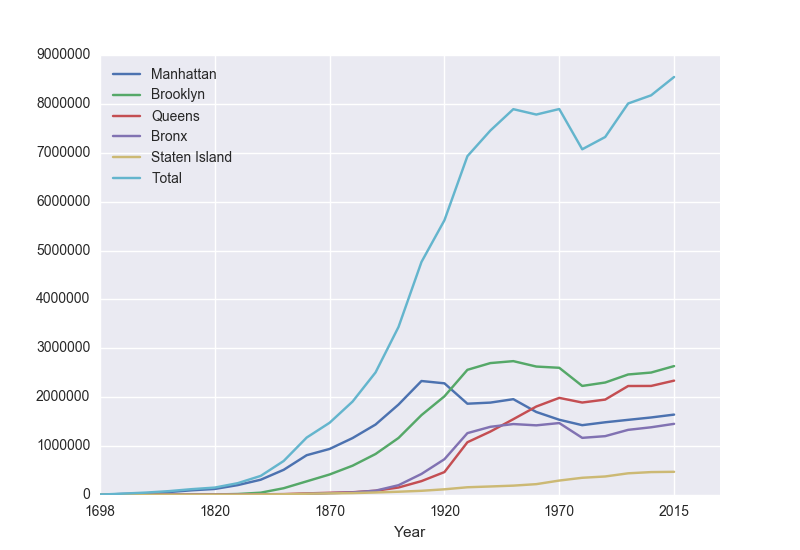

Laboratory Exercise 6
CSCI 127: Introduction to Computer Science
Hunter College, City University of New York
Spring 2026
Learning Objectives:
- Students will write programs that read and display semi-structured data with pandas and pyplot.
- Students will write programs that access and generate dataframe series (i.e. columns).
- Students will write programs that aggregate recurring values with groupby().
- Students will use Unix commands to write shell scripts.
- Students will create a Github account and access the course repo.
Software tools needed: terminal (command line), web browser and Python programming environment with numpy and matplotlib packages installed.
1. Pandas & Reading Data
To make reading files easier, we will use the Pandas library that lets you read in structured data files very efficiently. Pandas, Python Data Analysis Library, is an elegant, open-source package for extracting, manipulating, and analyzing data, especially those stored in 2D arrays (like spreadsheets). It incorporates most of the Python constructs and libraries that we have seen thus far.
(Pandas is installed on all the lab machines. If you are using your own machine, see the directions at the end of Lab 1 for installing packages for Python.)
To use pandas in a program, you need to import the library, just as we did when using turtles. For our first program, we will import both pandas as well as library that's useful for visualizing data, pyplot. Open up a new file, and add the lines:
import matplotlib.pyplot as plt
import pandas as pdWe used matplotlib in the Lab 3 and Lab 4 for plotting. The as plt allows us to use the plotting commands without having to write matplotlib.pyplot everytime, instead we just write plt. Similarly, The as pd allows us to use pandas commands without writing out pandas everytime-- we just write pd.
Next, save the NYC historical population data to the same directory as your program. This is a "comma separated values" file-- which is a plain text file containing spreadsheet data, with commas separating the different columns (thus, the name). Here's the first 10 lines of the file:
Source: https://en.wikipedia.org/wiki/Demographics_of_New_York_City,,,,,,
* All population figures are consistent with present-day boundaries.,,,,,,
First census after the consolidation of the five boroughs,,,,,,
,,,,,,
,,,,,,
Year,Manhattan,Brooklyn,Queens,Bronx,Staten Island,Total
1698,4937,2017,,,727,7681
1771,21863,3623,,,2847,28423
1790,33131,4549,6159,1781,3827,49447
1800,60515,5740,6642,1755,4563,79215pop = pd.read_csv('nycHistPop.csv',skiprows=5)In Pandas, the basic structure is a DataFrame which stored data in rectangular grids. Let's use this to visualize the change in New York City's population.
Before going on, let's print out the variable pop. It is a dataframe, described in the reading above:
print(pop)pop.plot(x="Year")
To recap: our program is:
import matplotlib.pyplot as plt
import pandas as pd
pop = pd.read_csv('nycHistPop.csv',skiprows=5)
pop.plot(x="Year")
plt.show()- Imported the pandas library that contains structures and functions for organizing and visualizing data. We also imported the pyplot library which pandas uses to create figures.
- It read in a CSV file, containing NYC population historical data.
- It displayed the data as a visual plot of years versus borough populations.
- The last line shows the figure you created in a separate graphics window.
There are useful built-in statistics functions for the dataframes in pandas. For example, if you would like to know the maximum value for the series "Bronx", you apply the max() function to that series:
print("The largest number living in the Bronx is", pop["Bronx"].max())Similarly the average (mean) population for Queens can be computed:
print("The average number living in the Queens is", pop["Queens"].mean())Challenges
- What happens if you leave off the x = "Year"? Why?
- What happens if you add in x = "Year", y = "Bronx"?
- What do the series functions: min(), median(), std(), and count() do?
2. Accessing & Manipulating Columns
Each column in the original spreadsheet is a column, or series. We can look at the column for the Bronx with:
print(pop['Bronx'])A nice thing about series is that you can do basic arithmetic with them. For example,
print(pop['Bronx']*2)You can also use multiple columns in a calculation:
print(pop['Bronx']/pop['Total'])We can save that series by creating a new column for it:
pop['Fraction'] = pop['Bronx']/pop['Total']pop.plot(x = 'Year', y = 'Fraction')fig = plt.gcf()
fig.savefig('fractionBX.png')
Putting this altogether, we have a program:
#Libraries for plotting and data processing:
import matplotlib.pyplot as plt
import pandas as pd
#Open the CSV file and store in pop
pop = pd.read_csv('nycHistPop.csv',skiprows=5)
#Compute the fraction of the population in the Bronx, and save as new column:
pop['Fraction'] = pop['Bronx']/pop['Total']
#Create a plot of year versus fraction of pop. in Bronx (with labels):
pop.plot(x = 'Year', y = 'Fraction')
#Save to the file: fractionBX.png
fig = plt.gcf()
fig.savefig('fractionBX.png')
How can you modify the program to let the user specify the borough to compute the fraction of the population?
3. Aggregating Columns
Sometimes you have recurring values in a column and you want to examine the data for a particular value. For example, given the dataset containing weather observation in Australia, find the average rainfall at each location.
You may download the dataset to test this program locally.
The pandas function groupby() does exactly that: groups the rows by values in a given column and then aggregates the corresponding values for the other columns via some specified function (e.g. min, max, avg, ..)
Thus, to find the average rainfall at each location, we want to group 'Location', look at 'Rainfall' and take the average:
#Import libraries.
import pandas as pd
#Read in the csv file.
rain = pd.read_csv('AustraliaRain.csv')
#Group the data by location
groupedData = rain.groupby('Location')
#Print the average rainfall
print(groupedData['Rainfall'].mean())This will print a list of average rainfall measurements at each location:
Note: you could achieve the above in a single line as follows (it is equivalent to the above):
#Group the data by location and print the average rainfall at each location.
print(rain.groupby('Location')['Rainfall'].mean())Finally, to retrieve the data for a particular location, for example "Albury", we can use groupby() along with get_group().
#Group the data by location but look specifically at group 'Albury' (one of the repeated values in the 'Location' column).
albury = rain.groupby('Location').get_group('Albury')
#Print the average rainfall for Albury.
print(albury['Rainfall'].mean())This will output a single number: the average rainfall in 'Albury'
Steps on using groupby and get_group in pandas
Illustrate with student_info.csv, which stores information for students. Columns (attributes to describe a student) are Name, Age, Gender, Grade Level (freshmen, sophomore, junior, and senior), and Score.
- Use read_csv method of pandas to read a csv file, put the result in a data frame.
students = pd.read_csv('student_info.csv') - Examine file structure of csv file to be analysized, choose a column to be grouped using groupby method of data frame of pandas. Suppose you choose to group by Grade Level, then we have four groups: freshmen, sophomore, junior, and senior.
Note that python is a case-sensitive language. Since the column name is Grade Level, you cannot write it as grade level.
groupedData = students.groupby('Grade Level') - You may calculate aggregate functions, say, max, min, mean (average), standard deviation, median of a numerical attribute -- for example, age, score -- of the grouped data. In the above example, you may choose to calcuate the average of scores in each group.
print(groupedData['Score'].mean()) - You can also pick up a specific group using get_group method on grouped data, and apply aggregate functions on corresponding column (attribute) of that group.
#pick up the group of senior students seniorStudents = groupedData.get_group('Senior') #find out the maximum score of senior students max = seniorStudents['Score'].max()
To check your understanding, modify the program above to group by age and by gender.
4. More on the Command Line Interface
You can write programs in the Unix shell scripting language. Often called scripts, they are typically used for tying together input and output from different programs.
Let's look at a sample script (from elf lord's tutorials on linux):
#!/bin/bash
echo "hello, $USER. I wish to list some files of yours"
echo "listing files in the current directory, $PWD"
ls #list files- It's standard to include as the first line of your scripts that specifies the program that's running (this is often called the "shebang" line).
There's different variants of shell scripts. We're using the default login shell for Ubuntu (the type of Unix running on the lab laptops) called bash, so, we start our script by specifying that we want to use the bash shell to evaluate it. Side note: In Ubuntu 6.10, dash replaced bash as the default system shell, but bash remained the default login shell and is one of the most popular options.#!/bin/bash - The command echo is similar to print() in Python. It
writes a message to the terminal:
echo "hello, $USER. I wish to list some files of yours" echo "listing files in the current directory, $PWD"$USER is a built-in variable that store the name of the current user. Similarly, the built-in variable, $PWD, stores the current directory (folder) that you are in.
- Lastly, our scripts can include any of the Unix commands that you have already learned. The last line of this file lists the files in the current directory using the ls command, followed by a comment:
ls #list files
In the shell, the different types of quotes have similar, but different, meanings. We'll use the double quotes since strings in double quotes will have special characters (like \n for newline) interpreted as in Python and C++.
Running Shell Commands on Your Computer
You can run our shell scripts directly in terminal windows on computers that run Unix.Both the computers in the lab and modern Apple computers run versions of the Unix operating system and have a terminal interface.
To launch a terminal interface:
- Lab Computers: Click the icon in the menu bar that looks like a small computer.
- Apple Computers: If there is not a computer icon in your menu bar, click LaunchPad (usually the second icon in the menu bar). At the top of the screen, a magnifier icon and grayed search word box will appear. Enter: Terminal in the box. Click the Terminal icon when it pops up.
$ echo "hello, $USER. I wish to list some files of yours"hello, laptopuser. I wish to list some files of yours$ echo "hello, $USER. I wish to list some files of yours"
hello, laptopuser. I wish to list some files of yours
$ echo "listing files in the current directory, $PWD"
listing files in the current directory, /Users/laptopuser/Downloads
$ exit
exitTo run bash scripts, which may have several bash commands, you need to edit a bash script file in plain text editor like notepad or gEdit. Save the file. Then make this file runnable by using chmod +x script_file_name, then run script_file_name in command line. See more details in the following example.
Use any text editor that will allow you to save a file with any or no extension such as gEdit (included with some Linux distributions), textEdit (included with MacOS) or notepad (included with Windows) to modify the above script to say "Hello, World". Note that we're leaving off the "!" since it is a bit confusing to print due to its special meaning in the shell (it lists the history, or previous commands, you have typed; for example: !! gives all commands in the history, !cd will repeat the most recent command you gave that starts with cd). Include in the second and third lines your name and email for the grading scripts (the first line should be the #!/bin/bash. Save your file as helloScript
Next, we'll change the permissions on the file, so that we can run it directly, by just typing its name. In the terminal, move to the directory where you saved your script and type:
$ chmod +x helloScript$ ./helloScriptMake sure to include a comment on the second line with your name (the first line has the #! line). Comments in shell are, like Python, preceded by a #.
5. GitHub

github is the standard way to share and collaborate on code. It functions much as Google docs does for documents. We will use it as a place (repository or "repo") for programs and lab exercises.
- If you do not already have an account, create an account on github. github will be used in future classes (and by employers), so, choose an account name that you can use for years to come.
- Work through the github for beginners tutorial.
- Work through the github Hello World tutorial.
Sample programs are available at the class repository (repo):
https://github.com/HunterCSci127/CSci127
What's Next?
You can start working on this week's programming assignments. The homework page has problem descriptions, suggested reading, and due dates next to each problem. You should aim to finish the programs in the next week, although the deadlines are several weeks out, to give a buffer just in case.